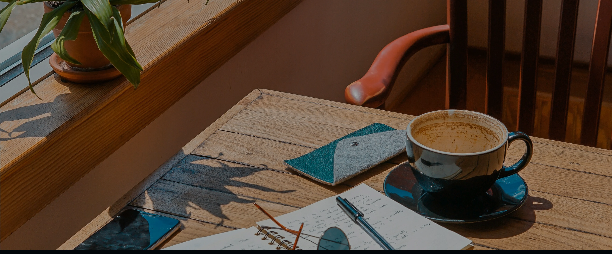
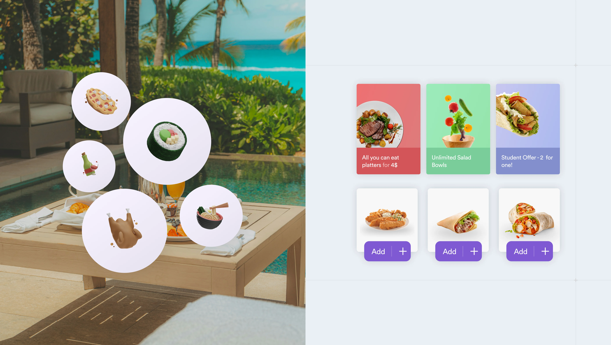
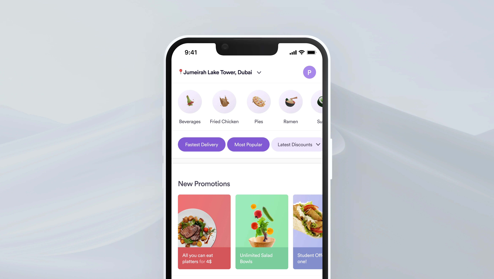
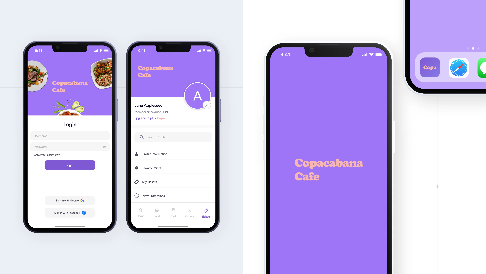
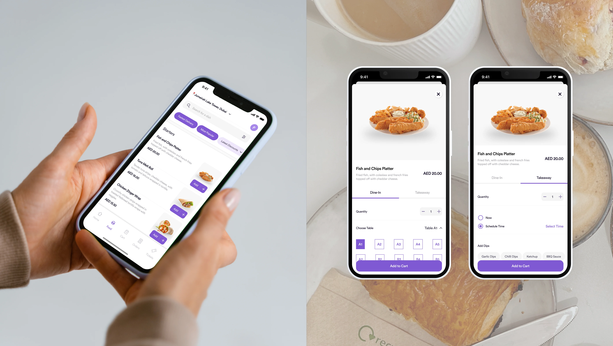
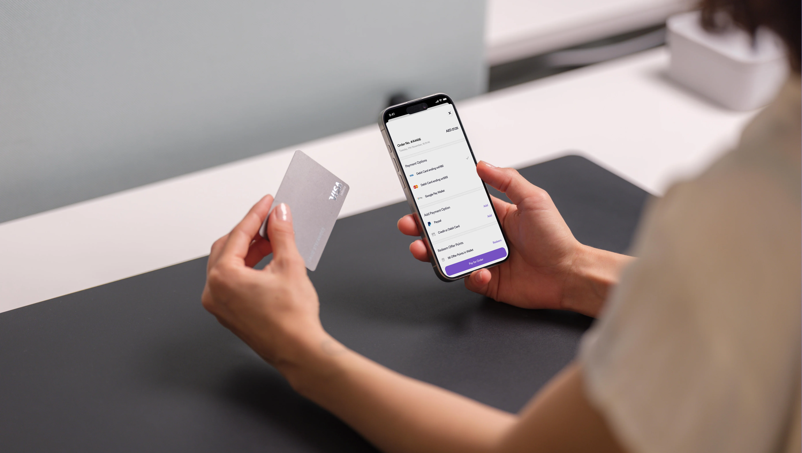
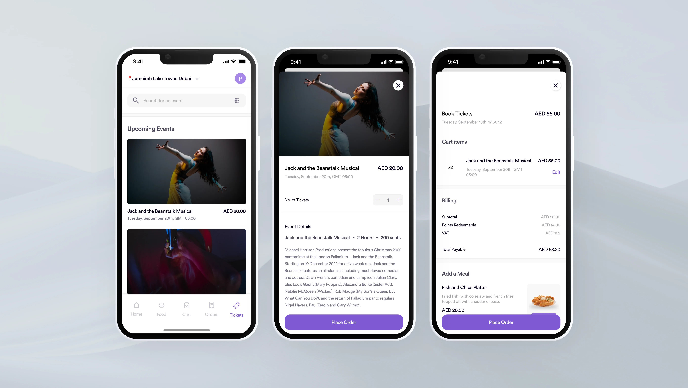

Conceptualising an app for an outdoor cafe chain with live events in Dubai.
Here, I conceptualised a consumer app for outdoor cafeterias in Dubai, creating a fictional chain inspired by various real cafes I frequented in real life. I used this project to test the product design waters, during my Google UX Design Certificate. I revisited this project later, in early 2023 — with an aim to hone my visual design skills, and learn design patterns (Apple’s Human Interface Guidelines in this case), in an attempt to follow industry standards as close as possible.

(01)
Customers want to reduce time spent ordering at the cafe or on their phone. They need to know when their food will be served as they often end up with cold food due to late pickups.
(02)
Regular customers visit these cafes frequently, some daily — and use them as remote workplaces during quiet hours. They wish they had perks for their frequent visits.
(03)
Despite event advertising, non-regular customers often miss ticket opportunities. At the same time, regular customers desire incentives instead of paying full price for shows.
(04)
Regular customers maintain consistent orders and payment methods. An app streamlines their experience by removing unnecessary steps and offering personalisation.



A digital menu enables users to browse cuisines and order favourites. Users track orders and plan meals ahead — with frequent orders earning reward points for discounts and bundles.
Filters group dishes by cuisine, dietary needs, and delivery times. Users choose between quick service or specific cuisine types. Get something fast, or get something Mediterranean. Your choice.

Customers post orders from a specific table, reserved under their booking. They can add notes, preferences, and upgrade meals with sides and drinks — with food arriving directly to their tables.
Order scheduling lets users set pickup times. They know exactly when to collect their food, preventing long waits and cold meals.

The app processes payments and earns loyalty points with authorised vendors and partners — users avoid cash transactions and last-minute card entry.
Real-time tracking shows live serving times for dine-in orders. Alternatively, the app lets users plan orders in advance from the comfort of their homes — knowing exactly when to pick up their orders.

The app integrates all Copacabana services in one ecosystem. Users order food, book events, track orders, and more — bringing all services to their fingertips.
Personal accounts connect to all Copacabana cafes worldwide. Users use the app as their portal to the Copcabana experience , using the app to order food and enjoy live events under one streamlined flow.